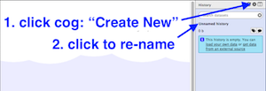
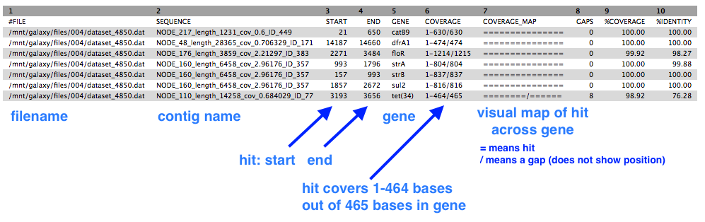

Finding antibiotic-resistant genes
Overview
- Import an assembled bacterial genome
- Find antibiotic-resistance (AMR) genes
Import data
- Go to your Galaxy instance.
-
Set up a new History for this Activity.
- In the History panel, click on the cog icon, select
Create New . - A new empty history should appear; click on
Unnamed history and re-name it (e.g. AMR genes).

- In the History panel, click on the cog icon, select
-
Import an assembled genome (or use one from your history).
- Copy this URL for a previously-assembled genome: https://swift.rc.nectar.org.au:8888/v1/AUTH_377/public/Microbial_tutorials/SPAdes_contigs.fasta
- From the Galaxy tool panel, click on
Get Data → Upload File - Click the
Paste/Fetch data button - Paste the URL into the box.
- Click the
Start button. - Once the progress bar reaches 100%, click the
Close button - The file will now upload to your current history.
- Re-name it with the pencil icon to
contigs.fasta .
Find antibiotic-resistance genes
- We will use the tool called ABRicate to find antibiotic resistance genes in the (draft) genome.
- ABRicate uses a database of these genes called ResFinder.
In the tools panel, go to
- For
Select fasta file choosecontigs.fasta (or the name of your own assembly file.) - Click
Execute .
There is one output file. Click on the eye icon to view. It should look like this, although likely with a different number of rows. (We will probably only have a few rows as we have used a cut-down data set).
- This shows a table with one line for each antibiotic resistance gene found, in which contig, at which position, and the % coverage.

Next
In the output from Abricate, column 5 has the list of the antibiotic-resistant gene names. Some of these may be complete, exact matches, and some may have a gap/mutation in their sequence which can affect whether that protein is actually expressed.
To find out more about what type of AMR genes these are, you can search Genbank with the gene name (e.g. aadD).